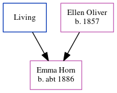

Emma Horn c1886 -
[ Home ] | [ Calendar ] | [ Surnames Index ] | [ Census Index ] | [ Family History ]A cap maker and the child of James Horn (an engine fitter) and Ellen Oliver (a silk weaver), Emma Horn, the second cousin twice-removed on the father's side of Nigel Horne, was born in Bethnal Green, London, England c. 18861.
During her life, she was living at Gosset Street in Bethnal Green on Apr 5, 18911; at Belgrave Street, Stepney, London, England on Mar 31, 19013; and at 70 Warner Place in Bethnal Green on Apr 2, 19112.
Parents
- James John
- Ellen was born in 1857
Citations
- 1891 England, Wales & Scotland Census - Findmypast (was age 5 and the daughter of the head of the household)
- 1911 Census for England & Wales - Findmypast (was age 25 and the daughter of the head of the household)
- 1901 England, Wales & Scotland Census - Findmypast (was age 15 and the daughter of the head of the household)
Family Tree
Generated by ged2site. Last updated on Jun 11, 2024